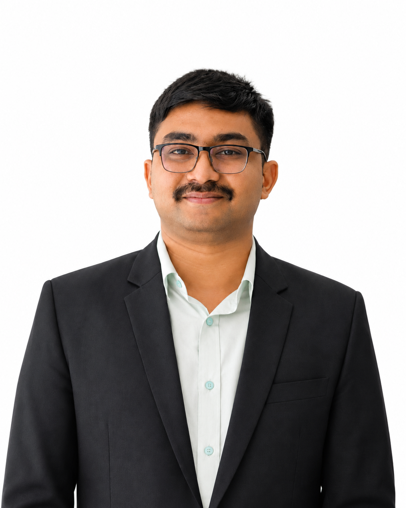

Structural Concrete
Behavior and design of concrete structures.
Lecturer in Civil Engineering, Anwer Khan Modern University
I am a Civil Engineer and academic with a background in Structural Engineering from Bangladesh University of Engineering and Technology (BUET). My research focuses on structural concrete, fiber-reinforced concrete, and sustainable construction materials, with an interest in developing safer, more durable, and resilient infrastructure.

Behavior and design of concrete structures.
Performance of concrete reinforced with fibers.
Structural analysis, design, and response.
Materials that support resource-conscious construction.
Safe, durable, and resilient infrastructure.
Open a section to see more detail.
I completed my B.Sc. in Civil Engineering, majoring in Structural Engineering, at BUET in June 2026. My undergraduate research examined how polypropylene, galvanized iron, and steel fibers affect the flexural performance of reinforced concrete beams. My academic interests include reinforced and prestressed concrete, fiber-reinforced concrete, structural analysis and design, and sustainable construction materials.
I currently teach in the Department of Civil Engineering at Anwer Khan Modern University. I welcome opportunities for graduate study and research collaboration in structural and concrete engineering.
Structural concrete · Fiber-reinforced concrete · Reinforced concrete structures · Sustainable construction materials · Structural performance and durability
Experimentally investigated the effects of fiber type and dosage on reinforced concrete beam behavior. The work included specimen preparation and testing, measuring compressive strength, splitting tensile strength, modulus of elasticity, and flexural properties.
Reinforced concrete · Prestressed concrete · Fiber reinforced concrete · Structural analysis and design · Concrete technology · Sustainable construction materials · Waste-to-resource engineering
Reviewed 100 publications on decentralized co-composting of municipal organic waste and faecal sludge, focusing on process optimization, pathogen reduction, nutrient recovery, environmental sustainability, and implementation feasibility.
Courses taught at Anwer Khan Modern University
| Course code | Course title | Credits |
|---|---|---|
| HUM-4101 | Socio-Economic Aspects of Development Project | 3 |
| CE-4104 | Building Design Sessional | 1.5 |
| CE-4103 | Prestressed Concrete | 2 |
| CE-3106 | Structural Analysis and Design-II Sessional | 1.5 |
| Ch-2101 | Chemistry-II | 3 |
| Ch-2102 | Chemistry-II Sessional | 0.75 |
| CE-1005 | Details of Construction and Estimating (Regular) | 2 |
Teach courses and sessional classes in prestressed concrete, building design, structural analysis and design, civil engineering drawing, geotechnical engineering, and development project studies. Prepare course materials and examinations, conduct lectures and practical sessions, and evaluate assignments and examination scripts.
Observed reinforced concrete construction, reinforcement detailing, site supervision, formwork, concreting processes, and site safety practices.
CGPA: 3.57/4.00; 3.71/4.00 in the final three semesters. Relevant coursework includes structural dynamics, structural analysis, indeterminate structures, reinforced concrete design, prestressed concrete, and steel design.
GPA: 5.00/5.00
Structural analysis and design: ETABS, SAP2000 · CAD and drafting: AutoCAD, SketchUp · Programming and analysis: MATLAB, C++
Vice President, ITE BUET Student Chapter · Member, ACI BUET Student Chapter · Member, BUET Innovation and Design Club
Site visit to Shah Cement Factory · Participant in an ACI webinar hosted by Islamic University of Technology (IUT)
I welcome conversations about research collaboration and graduate study in structural and concrete engineering.
Dhaka, Bangladesh